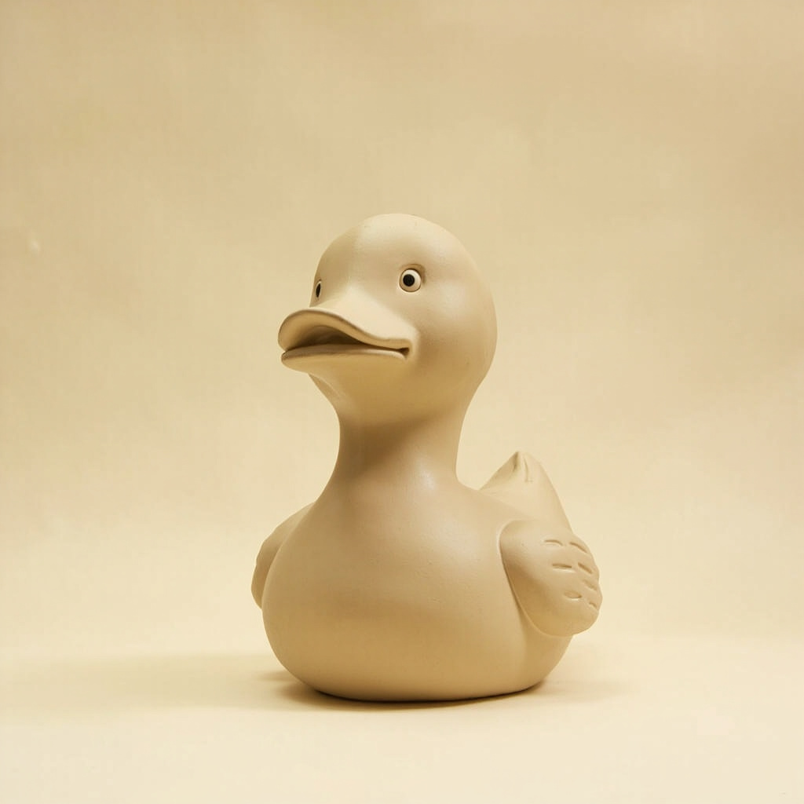
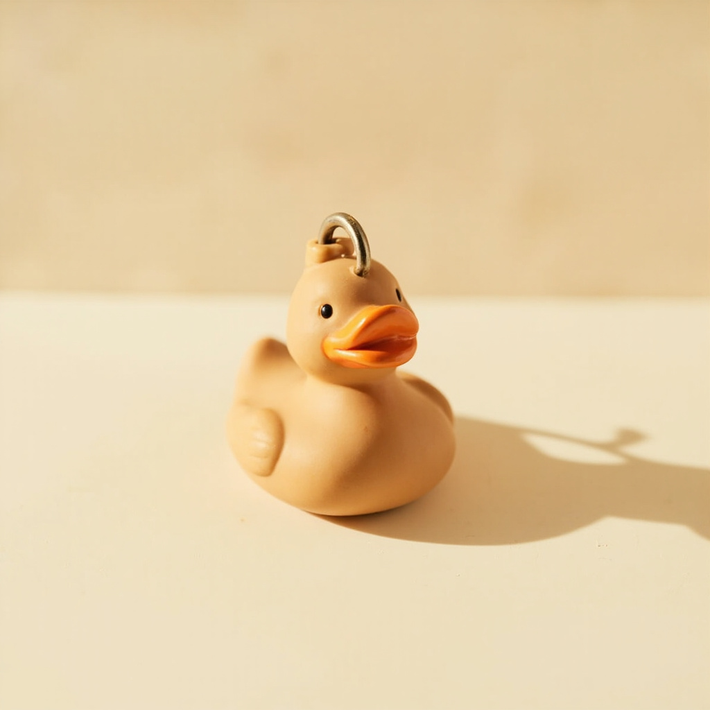
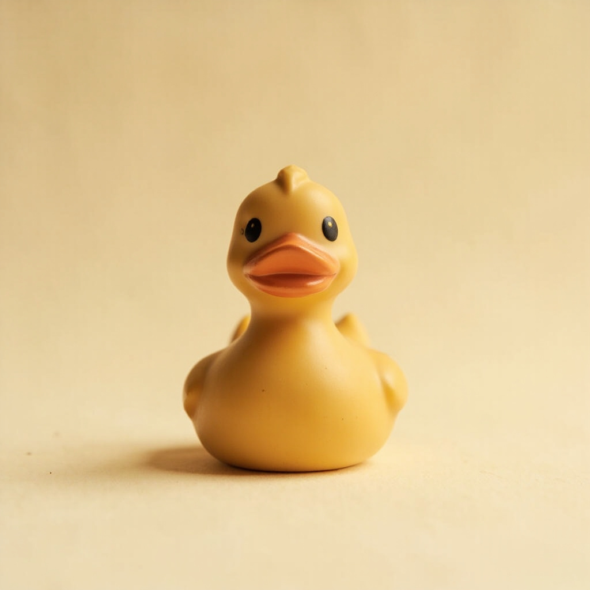
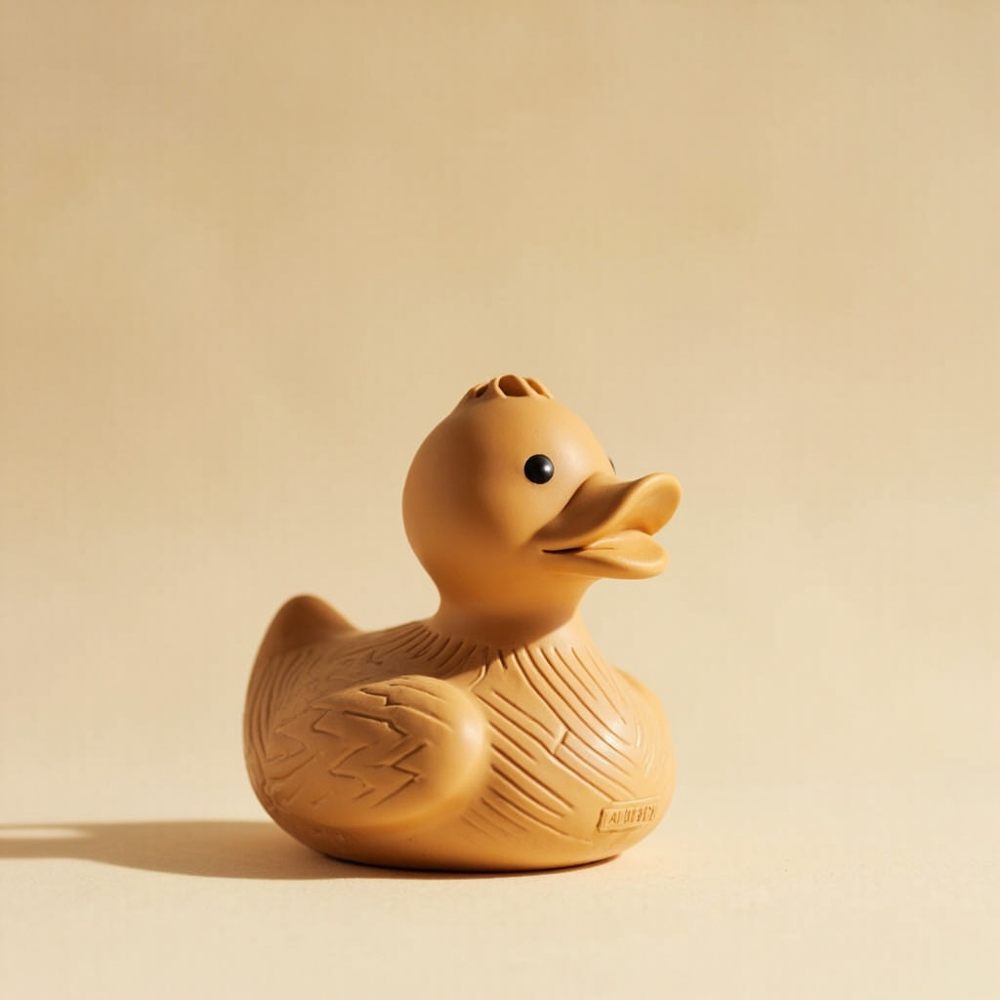
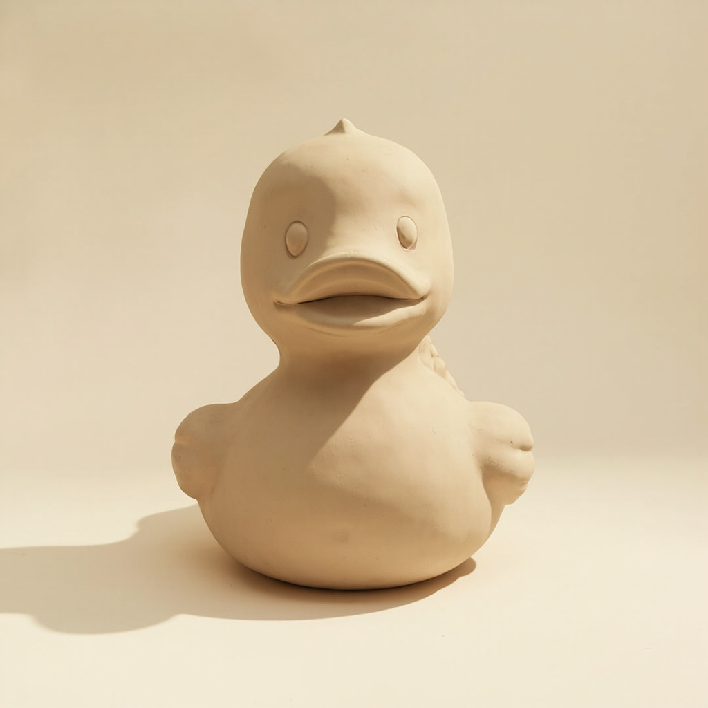

Material
Solid cast from vulcanized rubber. Food-grade silicone compound for Micro and Classic. Natural rubber with EPDM additives for Designer, Mega, Architect. No plastic inserts, no metal inside, no glue seams.

— A manifesto
We make ducks you'd rather put on a shelf than let into water. Small ones go in a pocket. Big ones go in the lobby. All of them belong in the frame.
One silhouette. Five sizes. From 4 cm to 3 m — proportions don't scale linearly, the Architect duck reads as the same duck as Micro.




— Product taxonomy
One silhouette, one body shape — and five lines for different scenarios. From a keychain to an architectural installation. The casting technology changes by line, the invariant is one.
Decorative object, not a toy. Indoor only. Protection from direct UV.
— Production
Solid cast from vulcanized rubber. Food-grade silicone compound for Micro and Classic. Natural rubber with EPDM additives for Designer, Mega, Architect. No plastic inserts, no metal inside, no glue seams.
Paint, not inserts. Eye shape, position, and color are invariant across all SKUs: black pupil + white sclera. Pigment is applied by hand after vulcanization, using food-grade silicone dye, UV- and water-resistant.
Five checks per duck: visual inspection, geometry ±2%, drop test from 1 m (Micro / Classic), odor test, gravimetry ±3%. For Architect — ultrasonic inspection of frame welds and a photo protocol of installation.
GOST 25779-83, EN 71-3 (chemical migration), REACH. No phthalates or bisphenol A. Temperature range: −20 °C … +60 °C. Indoor only. Wash with warm water and mild soap. No abrasives, alcohols, or bleach.
— For brands & events
Custom means choosing from a branded palette. 12 signature TPM colors (Quacktory Pigment Menu), integral body pigment, not surface paint. Lead times and prices are predictable.
Body pigment is integral, not surface paint. Do not use at T < −25 °C. Care instructions are in the product passport.
— FAQ
Yes. Micro 4 cm is marked '6+', with a separate sticker 'Not for children under 3 years. Small part'. Classic is '3+'. The material is certified per GOST 25779-83, EN 71-3, REACH. No phthalates or bisphenol A.
Five lines: Micro 4–8 cm, Classic 10–25 cm, Designer 15–30 cm, Mega 50–120 cm, Architect 1.5–3 m. One silhouette, one body shape — the scale is non-linear: the Architect duck looks like 'the same duck' as the Micro.
Custom means choosing from the 12-color TPM palette (Quacktory Pigment Menu). Integral body pigment, not surface paint. A fully custom color (your own Pantone) is discussed separately as a new formula development: +2 weeks to the lead time, +15% to the price.
Wash with warm water and mild soap. No abrasives, alcohols, or bleach. Temperature range: −20 °C … +60 °C. Above +70 °C — deformation, below −25 °C — embrittlement. Indoor only, protected from direct UV.
12 weeks. Includes a site visit for measurements, production of a master model from polystyrene via CNC milling, a fiberglass mold, an internal steel frame with stiffening ribs, and installation by a certified crew.
Micro / Classic / Designer — CDEK, Russian Post. Mega — pallet delivery, courier site visit required. Architect — specialized transport, climate control, wooden crating, on-site installation.